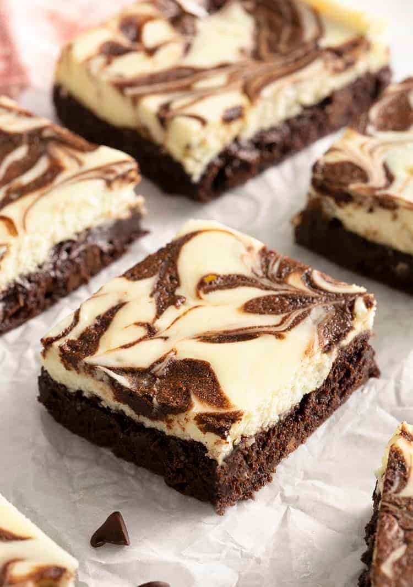

Caramel Brownies
Ricos, húmedos y esponjosos, estos Brownies de caramelo son una
delicia deliciosa para satisfacer tus antojos dulces. Brownies
pegajosos y deliciosos con una gruesa capa de caramelo en el medio,
estos brownies son excelentes para cualquier ocasión. Obtendrás la
combinación perfecta de chocolate y caramelo en cada bocado.

Ingredientes
- 1 taza de mantequilla sin sal derretida (227 g)
- 3/4 taza de cacao en polvo sin azúcar (75 g)
- 1 taza de azúcar moreno claro (220 g)
- 1/4 taza de azúcar granulada (50g)
- 3 huevos grandes
- 1 cucharada de extracto de vainilla
- 1 cucharadita de sal
- 1 taza de harina para todo uso (120 g)
- 1 taza de chispas de chocolate semidulce (180g)
- 1 lata de leche condensada azucarada (14 onzas)
- 1 paquete de caramelos* sin envolver (11 onzas)
Procedimiento
-
Precalienta el horno a 350F. Engrase un molde para hornear de
8x8 pulgadas y cúbralo con papel pergamino.
-
En un tazón grande, mezcle la mantequilla derretida y el cacao
en polvo hasta que estén bien combinados. Agrega el azúcar, los
huevos, la vainilla y ½ cucharadita de sal y bate hasta que
quede suave. Agrega la harina y las chispas de chocolate.
-
Extienda la mitad de la masa en el molde para hornear preparado.
-
En una cacerola pequeña, caliente la leche condensada a fuego
medio-bajo hasta que esté tibia, aproximadamente 3 minutos,
revolviendo con frecuencia. Agregue los caramelos y la ½
cucharadita de sal restante, revolviendo hasta que esté
completamente derretido y suave. Retirar del fuego.
-
Vierta ⅔ de la salsa de caramelo sobre la masa de brownie en la
sartén. Vierta el resto de la masa de la parte superior del
caramelo.
-
Hornee de 35 a 45 minutos. (Menos tiempo de horneado dará como
resultado brownies más pegajosos). Deje enfriar completamente en
el molde sobre una rejilla.
-
Rocíe con la salsa de caramelo restante y espolvoree con sal si
lo desea. Cortar en cuadrados. Los brownies se pueden tapar y
almacenar a temperatura ambiente hasta por 4 días.
Cheesecake Brownies
Te encantarán estos deliciosos brownies de tarta de queso con una
rica base de chocolate dulce y una cobertura de tarta de queso
ligera y perfectamente dulce con un remolino de chocolate. El ligero
sabor del queso crema realmente complementa el sabor del chocolate y
lo convierte en un bocado equilibrado.

Ingredientes
Para la base de brownie
- 1 taza de mantequilla sin sal derretida (227 g)
- 3/4 taza de cacao en polvo sin azúcar (75 g)
- 1 taza de azúcar moreno claro (220 g)
- 1/4 taza de azúcar granulada (50g)
- 3 huevos grandes
- 1 cucharada de extracto de vainilla
- 1 cucharadita de sal
- 1 taza de harina para todo uso (120 g)
- 1 taza de chispas de chocolate semidulce (180g)
- 1 lata de leche condensada azucarada (14 onzas)
- 1 paquete de caramelos* sin envolver (11 onzas)
Para la mezcla de cheesecake
-
2 bloques (8 onzas/227 g) de queso crema a temperatura ambiente
- ½ taza de azúcar granulada (100 g)
- 1 pizca de sal
- 2 huevos grandes a temperatura ambiente
- 1 cucharada de extracto de vainilla
Procedimiento
Para la base de brownie
-
Precalienta el horno a 350°F. Engrase ligeramente un molde para
hornear cuadrado de 9 pulgadas con mantequilla o spray para
hornear y cúbralo con papel pergamino.
-
En un tazón grande apto para microondas, combine la mantequilla
y 1 taza de chispas de chocolate y cocine en el microondas en
intervalos de 20 segundos, revolviendo entre cada uno, hasta que
esté completamente derretido y combinado, aproximadamente 2
minutos. Incorpora el cacao en polvo. Agrega el azúcar, los
huevos, la yema de huevo, el café y la vainilla y bate hasta que
estén bien combinados.
-
Agregue la harina y la sal y revuelva con una espátula hasta que
estén combinados. Reserva ½ taza de masa para brownie en un
tazón pequeño. Agrega el ⅓ de taza restante de chispas de
chocolate a la masa restante y extiende la masa en el molde
preparado.
-
Hornee durante 20 minutos para obtener brownies súper esponjosos
o 30 minutos para obtener brownies más pastosos. Mientras tanto,
agregue el agua caliente a la masa reservada. La masa aún debe
estar espesa, pero se vierte lentamente con una cuchara. Agregue
más agua si es necesario.
Para la mezcla de cheesecake
-
Mientras se hornea la base del brownie, prepare la cobertura del
pastel de queso colocando el queso crema, el azúcar y la sal en
un tazón grande para mezclar. Batir con una batidora de mano o
una batidora de pie equipada con el accesorio para batir a
velocidad media hasta que esté muy suave y ligera,
aproximadamente 2 minutos.
-
Reduzca la velocidad a baja y agregue los huevos uno a la vez.
Raspe el tazón y luego agregue la vainilla. Vierta con cuidado
la cobertura de tarta de queso sobre la base de brownie
precocida. (No es necesario enfriar el brownie primero).
-
Vierta la masa de brownie reservada sobre la cobertura de tarta
de queso. Con una brocheta o la punta de un cuchillo, revuelva
con cuidado la masa en la mezcla de tarta de queso.
- Continúe horneando durante 10 minutos.
-
Reduzca la temperatura del horno a 325°F y hornee por otros 20 a
25 minutos o hasta que la cobertura del pastel de queso esté
inflada por los bordes y el centro se tambalee ligeramente.
Coloque la sartén sobre una rejilla para que se enfríe por
completo. Refrigere durante 1 hora antes de cortar.
Carrot Cake
Esta receta clásica de pastel de zanahoria lo tiene todo: una miga
adictiva y húmeda, especias sutiles y cálidas, mucho sabor a
zanahoria dulce, nueces crujientes y un glaseado de queso crema rico
y picante.
Ingredientes
Para la torta
- 2 1/2 tazas de harina para todo uso (300 g)
- 2 cucharaditas de polvo para hornear
- 1 cucharadita de bicarbonato de sodio
- 1 cucharadita de sal
- 1 cucharadita de canela molida
- 1/2 cucharadita de nuez moscada molida
- 1 1/3 taza de aceite vegetal (320 ml)
- 1 taza de azúcar moreno claro envasada (220 g)
- 1 taza de azúcar granulada (200g)
- 4 huevos grandes
- 2 cucharaditas de vainilla (10 ml)
-
3 tazas de zanahorias ralladas (de 1 libra de zanahorias) (315
g)
- 1 taza de nueces pecanas picadas (120 g)
Para el frosting
-
1 bloque (8 onzas/227 g) de queso crema a temperatura ambiente
- 1 taza de mantequilla sin sal ablandada (227 g)
- 1 cucharadita de extracto de vainilla
- 4 a 5 tazas de azúcar en polvo (480-600 g)
Procedimiento
Para la torta
-
Precalienta el horno a 350°F. Engrase ligeramente dos moldes
para pasteles redondos de 9 pulgadas con aceite en aerosol o
mantequilla y cubra los fondos con papel pergamino.
-
En un tazón grande, mezcle la harina, el polvo para hornear, el
bicarbonato de sodio, la sal, la canela y la nuez moscada.
-
En un tazón mediano aparte, mezcle los azúcares, el aceite, los
huevos y la vainilla hasta que estén bien combinados. Vierta los
ingredientes húmedos en la mezcla seca y revuelva hasta que se
combinen y solo queden unas pocas rayas de harina.
-
Incorpora las zanahorias y las nueces a la masa. Divida la masa
uniformemente en los moldes preparados.
-
Hornee durante 30 a 35 minutos, o hasta que al insertar un
palillo en el centro, éste salga limpio. Deje que las capas de
pastel se enfríen completamente en los moldes colocados sobre
una rejilla para enfriar. Una vez enfriado, invierte las capas y
retira el papel pergamino.
Para el Armado
-
Coloque una capa de pastel enfriada boca arriba sobre un soporte
para pasteles o un plato para servir y extienda ¾ de taza de
glaseado por encima, hasta el borde del pastel. Coloque la otra
capa de pastel boca abajo encima. Extienda el glaseado restante
sobre la parte superior y los lados del pastel.
-
Si lo deseas, puedes guardar un poco del glaseado para decorar
el pastel o presionar nueces tostadas picadas sobre el glaseado.
Enfríe el pastel durante 30 minutos para fijar el glaseado antes
de cortarlo. Mantenga las sobras cubiertas y refrigeradas por
hasta 1 semana.